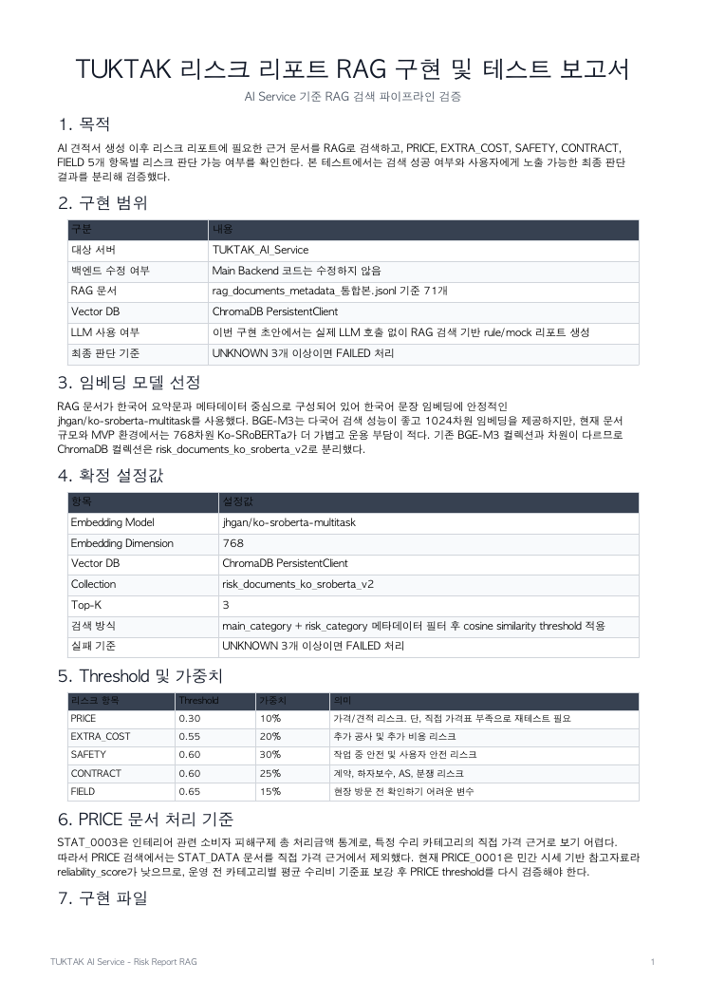
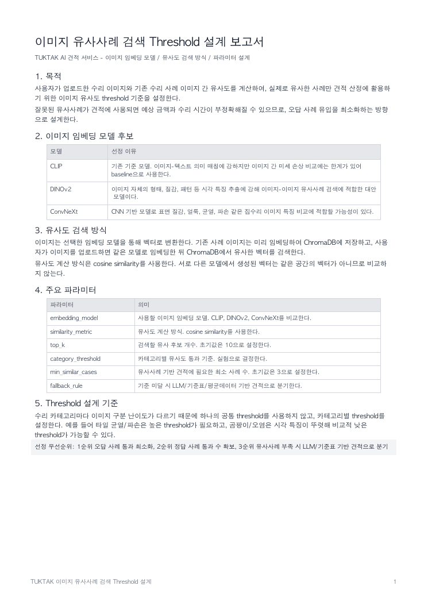
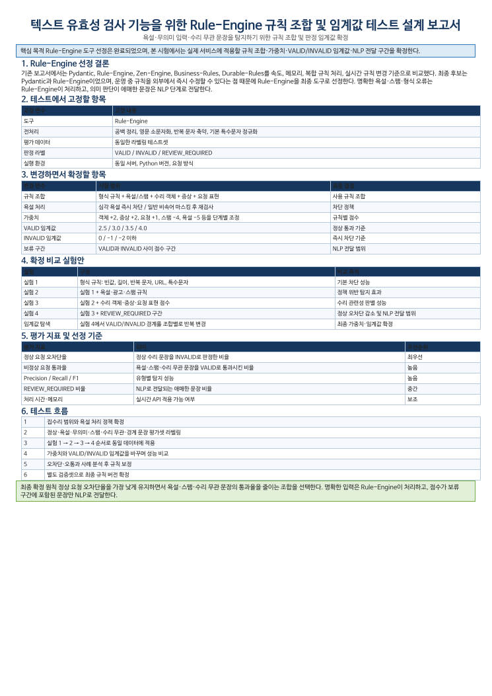
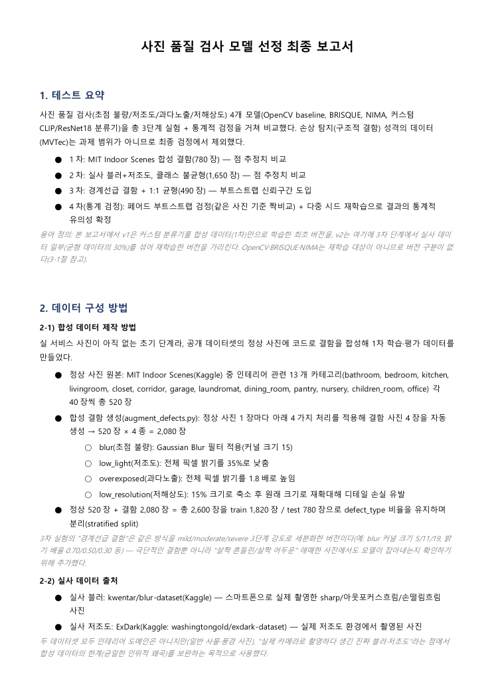
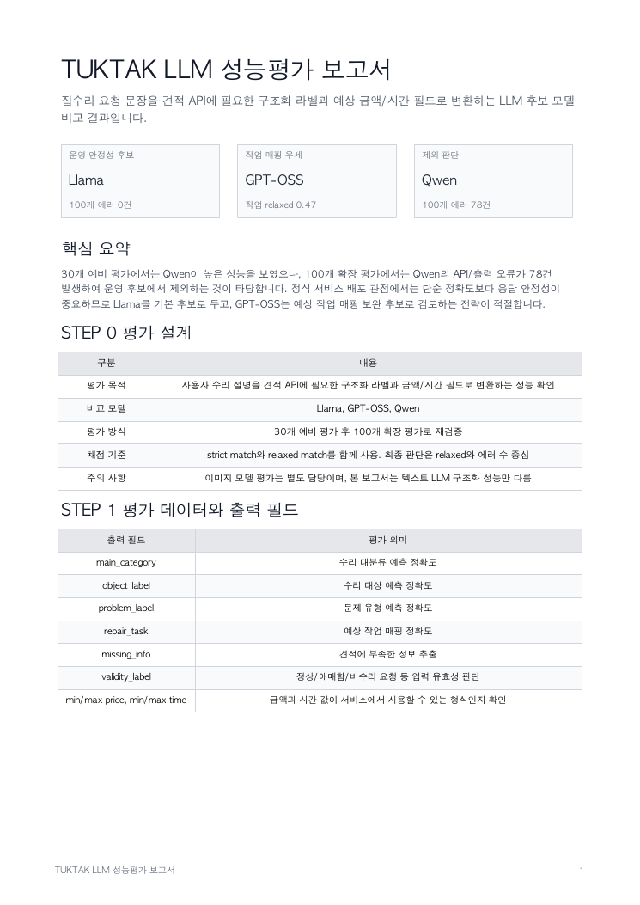

사진과 설명 입력 → AI 견적 확인 → 리스크 리포트 확인 → 시공자 제안 비교
문제에서 서비스 흐름까지
집수리는 사용자가 적정 가격, 추가 비용 가능성, 작업 범위, 시공자 신뢰도를 사전에 판단하기 어렵다는 문제가 있습니다. TUKTAK은 사용자가 사진과 설명을 입력하면 AI가 먼저 기준 견적과 리스크 정보를 제공하고, 이후 시공자 제안 비교까지 이어지는 흐름으로 정보 비대칭을 줄이는 것을 목표로 설계했습니다.
서비스 · 배포 아키텍처
React 프론트엔드, FastAPI 메인 백엔드, AI Service, MySQL/RDS, ChromaDB, S3 이미지 저장소를 분리한 구조로 설계했습니다. 사용자는 프론트엔드에서 견적을 요청하고, 메인 백엔드는 서비스 데이터를 관리하며, AI Service는 견적 생성과 RAG 리스크 리포트 생성을 담당합니다.
React 기반으로 견적 요청, 리포트 조회, 매칭, 리뷰 흐름을 제공합니다.
FastAPI 기반으로 사용자, 견적, 리포트, 매칭, 리뷰 데이터를 관리합니다.
LangGraph, ChromaDB, 임베딩 모델, LLM 연동 흐름을 별도 서버로 분리했습니다.
MySQL/RDS에 서비스 데이터를 저장하고, ChromaDB에 RAG 문서 벡터를 저장합니다.
S3, CloudFront, ECR, ECS, RDS 기반의 AWS 배포 구조를 설계했습니다.

설계와 구현 범위
4명 팀에서 저는 AI 백엔드와 리스크 리포트 흐름을 맡았습니다. RAG 문서 검색, 이미지 유사사례 threshold, AI Service 연동 구조, Risk Report API처럼 AI 결과가 서비스 응답으로 이어지는 부분입니다. 입력 유효성 검사 · 사진 품질 검사 · 구조화 모델 평가 · 화면 · CI/CD는 다른 팀원이 담당했습니다.
- ChromaDB 기반 RAG 검색 설계 · 구현 (근거 문서 71개, 리스크 항목 5개)
- Risk Report 도메인 모델 및 API 구현 (Main Backend)
- Main Backend와 AI Service 연동 구조 설계
- UNKNOWN 3개 이상이면 FAILED로 처리하는 기준 설계: 대표 요청 10건 중 가전 1건 분리
- 이미지 유사사례 검색 threshold 설계: 오답 통과 0개, 정답 통과율 60.4%
- 이미지 임베딩 모델 4종 비교 후 Nomic Embed Vision 유사도 검색 구조 설계
- 한국어 문서 검색을 위해 Ko-SRoBERTa로 임베딩 모델 교체
- 시연영상 제작
AI 핵심 흐름
입력 유효성 검사
사진 품질과 텍스트 유효성을 먼저 검사해 견적에 사용할 수 있는 입력인지 판단합니다.
NLP 구조화
설명 텍스트에서 카테고리, 수리 대상, 문제 유형, 예상 작업, 부족 정보를 구조화합니다.
유사 사례 검색
이미지/텍스트 임베딩과 threshold 기준으로 기존 수리 사례를 검색합니다.
견적 생성
유사사례와 기준표를 우선 사용하고, 부족한 경우 LLM 기반 생성 흐름으로 보완합니다.
RAG 리스크 리포트
소비자원, 표준계약서, 시방서 등 근거 문서를 검색해 추가 비용과 주의사항을 정리합니다.
문제 해결 과정
근거 부족 케이스가 낮은 위험도로 출력
PROBLEM근거 문서가 부족한 카테고리(예: 가전, 근거 2/5)가 낮은 위험도로 정상 출력되고, 통계 자료가 가격 근거로 통과됐습니다. 유사도 점수만으로 결과를 확정하고 항목별 근거 수와 문서 유형을 확인하지 않은 것이 원인이었습니다.
SOLUTION검색을 리스크 항목 5개(PRICE · EXTRA_COST · SAFETY · CONTRACT · FIELD)로 나누고 문서 유형 · 카테고리 메타데이터 필터를 적용했습니다. UNKNOWN이 3개 이상이면 FAILED로 처리해, 대표 요청 10건 중 근거가 부족한 가전 1건을 점수 없이 분리하고 잘못된 위험도 노출을 차단했습니다.
이미지 검색 기준에 대한 팀 의견 차이
PROBLEM유사사례를 최대한 많이 보여주자는 의견과 오답 통과를 엄격히 막자는 의견이 갈렸습니다. 정확도 단일 지표로만 평가해 잘못된 사례가 견적 근거로 쓰일 위험과 카테고리별 난이도 차이가 드러나지 않았습니다.
SOLUTION평가 지표를 오답 통과율로 바꾸고 카테고리별 보수적 threshold를 적용했으며, 애매한 경우는 LLM 판단으로 분기했습니다. 오답 통과 0개, 정답 통과율 60.4%라는 수치를 함께 보고 팀이 합의했습니다.
RAG 검색 품질 저하
PROBLEMLangChain 기본 임베딩 모델 사용 시 한국어 리스크 문서 검색 결과가 부정확했습니다. RAG 문서가 한국어 요약문과 메타데이터 중심이라 한국어 문장 임베딩에 맞는 모델이 필요했습니다.
SOLUTIONKo-SRoBERTa(768차원)로 교체하고, BGE-M3(1024차원)와 차원이 달라 ChromaDB 컬렉션을 분리했습니다. 문서 규모와 MVP 환경에서 더 가볍고 운영 부담이 적은 쪽을 택했습니다.
설계와 협업 산출물
리스크 유형별 문서 검색, Top-K, threshold, FAILED 기준을 검증했습니다.
이미지 유사사례 검색에서 오답 통과를 줄이기 위한 모델/유사도 방식 비교를 진행했습니다.
사용자와 시공자의 실제 서비스 흐름을 보여주는 시연영상을 제작했습니다.
프로젝트 결과
TUKTAK은 AI 견적, RAG 리스크 리포트, 역경매 매칭, 시연 가능한 웹 서비스 흐름까지 연결했습니다. 이 과정에서 AI 모델 자체보다 더 중요한 것은 모델 결과를 서비스 기준으로 검증하고, 근거 부족과 오답 통과를 어떻게 제어할지라는 점을 확인했습니다.
기술 스택
AI / RAG
LGLangGraph
 LangChain
DBChromaDB
LangChain
DBChromaDB
 Ko-SRoBERTa
NVNomic Embed Vision
Ko-SRoBERTa
NVNomic Embed Vision
LangChain
DBChromaDB
Ko-SRoBERTa
NVNomic Embed Vision
Backend / Data
 SQLAlchemy
SQLAlchemy
Cloud / DevOps
 AWS S3
CFCloudFront
ECRECR
ECSECS
AWS S3
CFCloudFront
ECRECR
ECSECS
 GitHub Actions
GitHub Actions
Planning / Collaboration
설계 · 검증 자료
배포 시스템 아키텍처
AWS, GitHub Actions, Docker, ECR/ECS, S3/CloudFront 기반 배포 흐름을 정리했습니다.

RAG 구현 테스트 보고서
리스크 리포트에서 필요한 근거 문서를 ChromaDB로 검색하고 UNKNOWN/FAILED 기준을 검증했습니다.

이미지 Threshold 설계
이미지 유사사례 검색에서 오답 통과를 줄이기 위한 모델과 threshold 기준을 설계했습니다.

텍스트 유효성 검사 설계
팀원 담당 자료. 모호한 입력, 가격 질문, 위험 요청, 정보 부족 입력을 검증하는 Rule Engine 기준입니다.

OpenCV 사진 전처리 평가
팀원 담당 자료. 조명 불량, 흐림, 정상 사진을 분류해 Vision LLM 전달 전 검수하는 전처리 기준입니다.

LLM 구조화 성능평가
팀원 담당 자료. 수리 요청 문장을 구조화 라벨로 변환하는 모델별 성능과 처리 결과 비교입니다.
TukTak 서비스 데모
AI 견적 요청부터 리스크 리포트 확인, 시공자 매칭 흐름까지 서비스의 핵심 동선을 시연 영상으로 정리했습니다.
발표자료
프로젝트 요약을 먼저 확인한 뒤, 발표자료에서 전체 흐름과 화면을 함께 볼 수 있습니다.
발표자료 미리보기
슬라이드를 좌우로 드래그해서 빠르게 훑어볼 수 있습니다. 원본 파일은 위의 PDF 보기 또는 PPT 다운로드 버튼으로 확인할 수 있습니다.